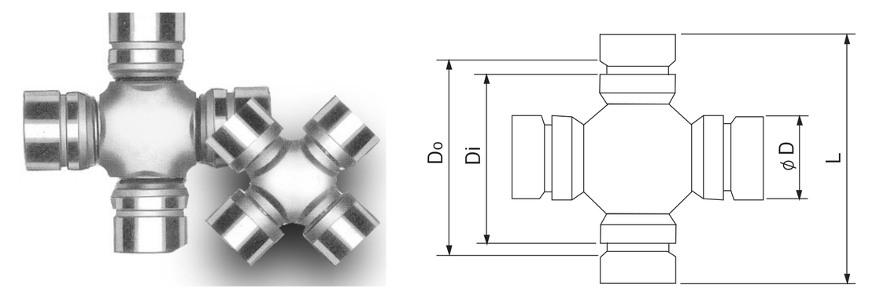

KOJIN Universal Joint
자동차·트랙터·트럭 등의 프로펠러 샤프트에 사용되는 십자축(크로스) 유니버설 조인트입니다.
적용 차종별 KOJIN 형번으로 구분되며, 축 직경(øD)·니들 롤러 하우징 내경(Di)·외경(Do)·전장(L) 규격을 함께 표기했습니다.
차종명 또는 형번으로 검색됩니다.
당사 SWS 카탈로그 규격 도면

KOJIN NO. · 적용차종 · øD · Di · Do · L · 비고
| KOJIN NO. | 적용차종 | øD | Di | Do | L | 비고 | TOYO 참고형번 |
|---|---|---|---|---|---|---|---|
| KUJ-001 | CH-HANDLE | 20.5 | - | - | 57 | GUIS-59 | TIS-159 |
| KUJ-002 | CH-DUMP | 22 | - | - | 62 | GU-덤프 | 문의 |
| KUJ-003 | BRISA PIKUP(내키) | 25 | 40.9 | 43.5 | 63.5 | GUMZ-7 | TMZ-107 |
| KUJ-004 | K-CAR(내키) | 26 | 44.6 | - | 67.7 | - | 문의 |
| KUJ-005 | DAEDONG TRACTOR(내키) | 25 | 56.5 | 59 | 79 | GUMZ-34 | 문의 |
| KUJ-006 | BUNGO(내키) | 26.5 | 47.2 | 50.3 | 72 | GUMZ-9 | TMZ-109 |
| KUJ-007 | TRACTOR | 27 | - | - | 74.2 | - | TA-108 |
| KUJ-008 | ELP | 27 | - | - | 81.4 | GUM-73 | TM-173 |
| KUJ-009 | NEW PORTER | 27 | - | - | 80 | GUK-12 | TK2780 |
| KUJ-010 | DONGYANG TRACTOR | 28 | - | - | 80 | GUA-9 | 문의 |
| KUJ-011 | TITAN(내키) | 32 | - | 60 | 93 | GUMZ-3 | TMZ-103 |
| KUJ-012 | BOXER(내키) | 37 | 67.9 | 71 | 105 | GUMZ-8 | TMZ-108 |
| KUJ-013 | CH-8t(BF101) | 34.93 | - | - | 126 | G-5-155 | 문의 |
| KUJ-014 | HD 3.5t(내키) | 34.93 | 73.2 | 76.2 | 106.2 | KIA-1-01 | TA-119 |
| KUJ-015 | FB485(RB520, RB540) | 47.6 | - | - | 135 | GU-400, GU-400- | 문의 |
| KOJIN NO. | 적용차종 | øD | Di | Do | L | 비고 | TOYO 참고형번 |
|---|---|---|---|---|---|---|---|
| KUJ-016 | FUSO 8t(805) | 44 | - | - | 129 | GUM-71 | TM-171 |
| KUJ-017 | FUSO 12t(905) | 46 | - | - | 142 | GUM-80 | TM-180 |
| KUJ-018 | FUSO 15t(909) | 52 | - | - | 154 | GUM-83 | TM-183 |
| KUJ-019 | TRACTOR | 30.2 | - | - | 80.1 | AP5-00 | TA-111 |
| KUJ-020 | TRACTOR | 30.2 | - | - | 92.2 | - | TA-112 |
| KUJ-021 | TRACTOR | 34.93 | - | - | 106.2 | GU-2300 | TA-119 |
| KUJ-022 | E.G 5t | 43 | - | - | 128.1 | - | 문의 |
| KUJ-023 | DAEWOO 15t | - | - | - | 174 | GUIS-67 | TIS-167 |
| KUJ-024 | ISUZU 8t | 42 | - | - | 125 | - | TIS-155 |
| KUJ-026 | PONY | 27 | - | - | 62 | GU-1210 | TU-1210 |
| KUJ-027 | HD 2.5t(내키) | 30 | 55.3 | 58.3 | 87 | GUM-93 | TM-193 |
| KUJ-028 | HD풀카, DW15t버스외(208) | 49.2 | - | - | 154.7 | S-1710 | 문의 |
| KUJ-030 | BONGO III | 28 | 49 | 52.4 | 78 | - | KN-129S |
| KUJ-031 | SINJIN JEEP(내키):농기계용 | 27 | 52.1 | 55.5 | 80 | GU-1242 | TU-1242 |
단위: mm
※ 위 표는 당사 SWS 카탈로그(베어링 치수표)를 기준으로 작성했습니다. 정밀 가공·발주 전에는 반드시 당사 정식 규격표 원본으로 최종 확인하시기 바랍니다.
이 제품군은 ISO 492 일반 허용공차 규격이 적용되지 않는(또는 별도 정밀등급이 적용되는) 품목으로, 공차는 제조사 자체 규격을 따릅니다. 정확한 공차는 발주 전 문의 바랍니다.
※ TOYO는 KOJIN과 별도로 동일 제품군(십자축 유니버셜 조인트)을 생산하는 타 브랜드입니다. 'TOYO 참고형번'은 KOJIN 비고란의 GU 계열 상호 참조 코드(예: GUM-73, GUMZ-9)가 TOYO 판매처(리셀러) 상품명에 동일하게 '호환'으로 표기된 사례를 근거로 정리한 것으로, TOYO 공식 카탈로그를 직접 확인한 것이 아닙니다. 확인 근거가 불충분한 품목은 '문의'로 표시했으니, 정확한 대조는 발주 전 반드시 문의 바랍니다.